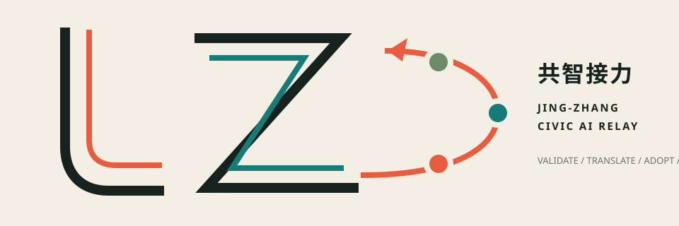

SCENARIO COMPARISON / 35
Seven equal criteria: systemic effect / public interest / AI-Native / spatial translation / long operations / evidence / data-gap resilience.

The century railway's movement logic becomes a civic learning loop for the AI era: validate in the north, translate in the middle, adopt in the south, and continuously return capability and feedback through two wings.
The civic protocol spine makes handoffs among research, industry, public life, and governance visible. Provisional boundaries constrain the drawing but do not become planning claims; nodes, corridors, and feedback relations carry the design.

Three overall operating scenarios were compared before projects were listed. Public interest, AI-Native character, long-term operations, evidence, and resilience to missing data select the primary scheme.
Seven equal criteria: systemic effect / public interest / AI-Native / spatial translation / long operations / evidence / data-gap resilience.
The five actor types named in the taskbook become input–minimum output–gate interfaces. They are concepts, not evidence of partnership, shared data, mutual recognition, or procurement.
The 43.6 km² Coordinated Research Area, 11.4 km² Overall Design Area, and 368.4 ha of Key-Area Detailed Design carry different responsibilities. Announced areas are official text; current polygons remain provisional rough substitutes.
Official boundaries, roads, parcels, buildings, heritage, and municipal geometry are absent. Rebuild all siting and calculations when official polygons arrive.
Twelve conceptual shared-edge zones cover the submitted boundary. Nine building volumes test interfaces and spatial rhythm only; they do not represent existing stock, floors, title, or Demolish–Renovate–Retain conclusions.

The areas do not each contain everything. They take primary roles—validation, translation, and adoption—inside one loop.
Shared tests, standards co-creation, public observation.
Open-source maintenance, product clinic, resident-problem translation.
Transit walking, AI-Native service, feedback, contribution record.

Continuity comes before intelligence. Three cross-seams and one spine first address access and accessibility. AI scenarios sit on top of basic public service and pass purpose, data, human, exit, and review gates.

4 are industry Testing and Validation Scenarios. Every card shows space, data, Human Review, and a stop condition. All are concepts, not approved operations.
A machine-readable schema fixes the evidence, rights, human duty, fallback, evaluation, and next-station action for every relay. Missing baselines remain null rather than estimated.
Problem, place reference, data/model version, expected and measured result, negative result.
Human signature, non-AI fallback, appeal/deletion, maintainer, cost status, exit asset.
Decision diff, continue/pause/refuse reason, retest condition, next-station action.
RACI A means one future authorized accountable role. This proposal appoints no government department, owner, or enterprise. Response times calibrate a conceptual pilot; they are not current standards or procurement promises.
A: authorized public-space role
STOP: accessible alternative or emergency duty unconfirmed
A: authorized testing role
STOP: isolation, staffing, insurance, or incident reporting missing
A: authorized open-source/service role
STOP: licence, safety, demand duty, or exit unclear
A: authorized public-service role
STOP: staffed fallback, appeal/deletion, or maintenance shift missing
A: authorized coordination role
STOP: data, IP, professional duty, or consumer rights unconfirmed
A: authorized data role
STOP: deletion overdue or decision/rollback untraceable
A: authorized brand/culture role
STOP: source, authorization, dispute, or withdrawal entry missing
A: authorized annual-operations role
STOP: operator, permit, budget, staffing, or exit asset unclear
Ratios come from conceptual geometry, not statutory controls. Protocol and accountability counts come from machine files. Display layers do not override machine data.

The authority order is fixed. PASS proves deterministic contracts only; it does not prove maintainer acceptance, partnership, professional approval, or real operation.